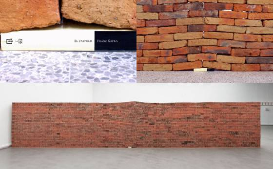

He de reconocer que el Arte Contemporáneo resulta en muchas ocasiones conflictivo. Hay quienes no lo comprenden e incluso llegan a considerarlo una tomadura de pelo. Así que, hoy voy a intentar convenceros de lo contrario.
Valoro todos los tipos de arte, lo que pueden aportarnos y os invito a mirar de forma diferente el arte contemporáneo, porque como ocurre en cada época, el arte es diferente y debemos leerlo o interpretarlo de diferente forma.
A continuación te daré algunas claves que pueden ayudarte en esta inmersión en el Arte Contemporáneo.
Es el arte de nuestro tiempo
¿Por qué nos empeñamos en conocer teorías pasadas prestando gran interés y dejamos de lado el arte que se está creando en nuestra era? Esto no es nuevo, ya ocurría en el pasado. Por ejemplo, el Neoclasicismo o el Renacimiento, fueron “renaceres” o volver a las formas clásicas porque se consideraban perdidas, es decir, porque hubo periodos incomprendidos en gran parte y desde siempre ha habido quienes negaban el valor del arte nuevo. Esto no lo hace ni mejor ni peor pero, aunque quizá no lo creas, en el arte contemporáneo también podemos encontrar infinidad de referencias más o menos clásicas. Esto nos lleva al siguiente punto.
Puede llegar a resultarnos familiar.
Aunque no lo creas, hay infinidad de referencias, ya sean clásicas o de nuestra era que podemos reconocer el arte contemporáneo. En ocasiones, este arte nos hace reflexionar más de lo que puede parecer y en ellas nos podemos reconocer.
Obra: "El castillo" o "El impacto de un libro” de Jorge Méndez Blake Imagen: Elpais.com
Facilita la interacción con el público
El último ejemplo nos hace ver que nos puede hacer reflexionar, pero en ocasiones juega con nosotros, cosa que no permite -de forma tan directa- el arte tradicional.
Finalmente, os dejo algunos artistas para que puedas comenzar a aproximarte a este tipo de arte desde la estética o técnica que más os guste (pregúntame por redes si buscas algo más concreto):
Imágenes: Google Arts & Culture
Igualmente, os recomiendo encarecidamente el libro “¿Qué estás mirando? 150 años de arte moderno en un abrir y cerrar de ojos” de Will Gompertz. Reflexiona desde el Arte Moderno hasta el Contemporáneo de una forma muy asequible para el lector.
Como siempre, gracias por leerme.
Publicaciones recientes

La versatilidad de Dora Kallmus
Exposición de Neue Gallerie NY

Cómo disfrutar de un museo
(y no morir en el intento)
Historia del arte y viajes, ¿afición o profesión?
La compatibilidad de estas dos inclinaciones